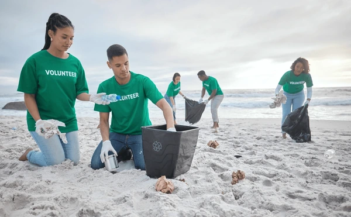
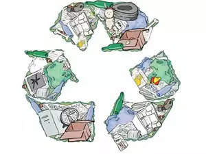

Vision and Mission
Vision Statement: To cultivate a sustainable world where every individual actively contributes to environmental preservation and lives in harmony with nature. We envision a future where communities thrive alongside ecosystems, fostering a deep respect for our planet.
Mission Statement: Our mission is to promote eco-friendly practices through comprehensive education, community engagement, and innovative solutions. We strive to empower individuals and groups to adopt sustainable habits, reduce their ecological footprints, and inspire others to join the movement for a healthier planet.
Benefits of Joining
- Empowerment: By joining our eco-friendly project, you take an active role in the sustainability movement. You'll learn how to make impactful changes in your daily life, giving you the tools to inspire others around you.
- Community Connection: Become part of a vibrant network of like-minded individuals who share your passion for the environment. Our community fosters collaboration, support, and the exchange of ideas.
- Practical Skills: Participate in workshops and hands-on activities that teach you valuable skills in areas such as gardening, composting, and renewable energy.
- Positive Impact: Every action counts! By getting involved, you’ll contribute to local projects aimed at enhancing environmental quality.
Visuals
1.

2.

3.

.png)